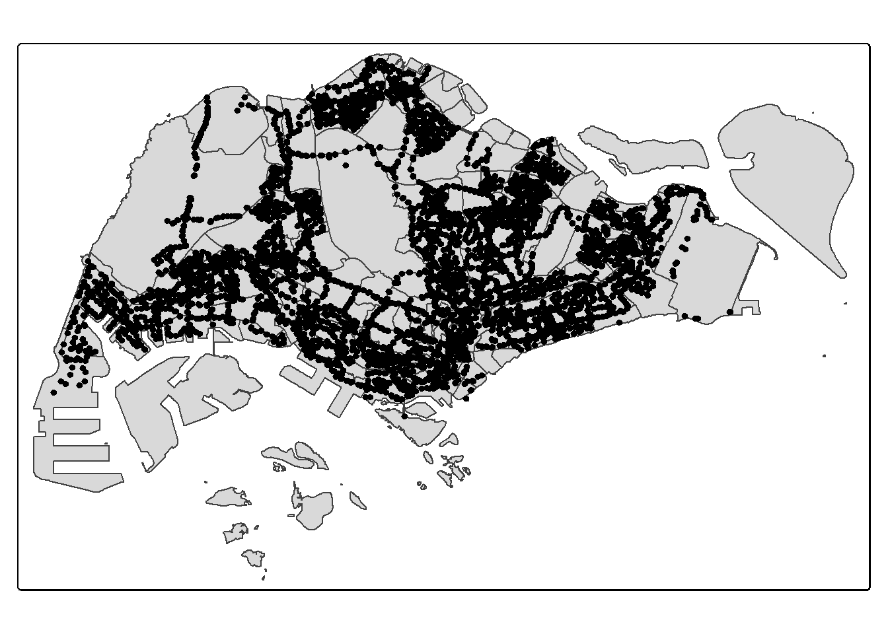
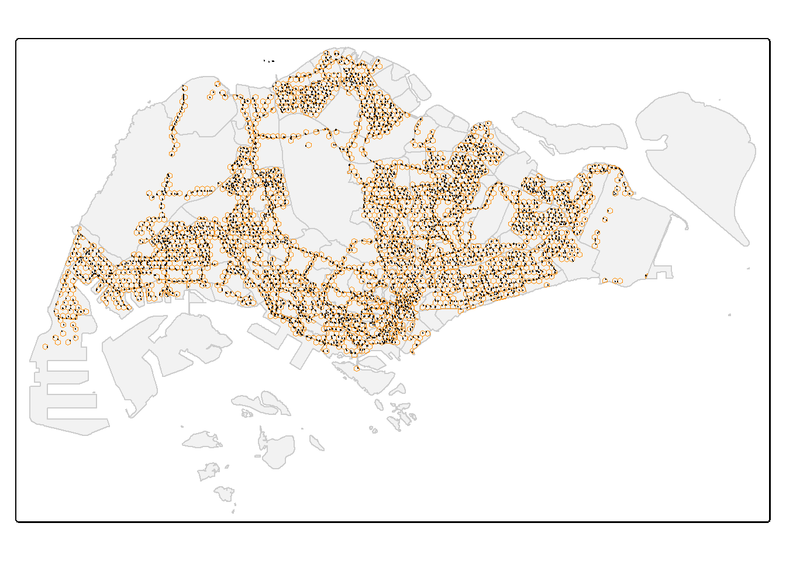
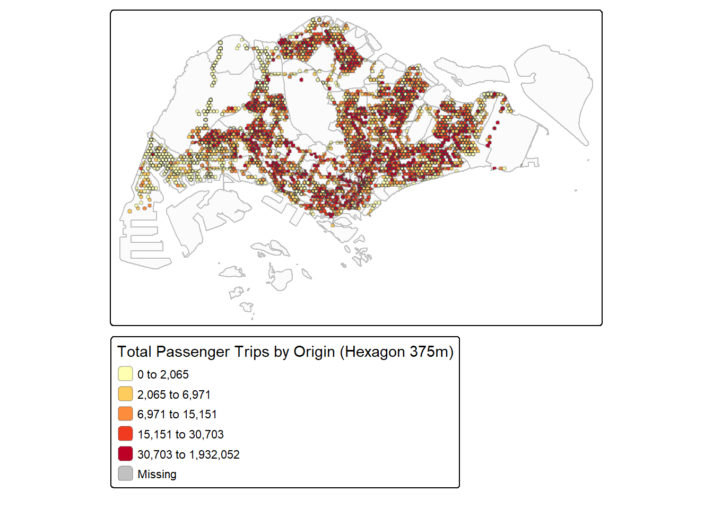
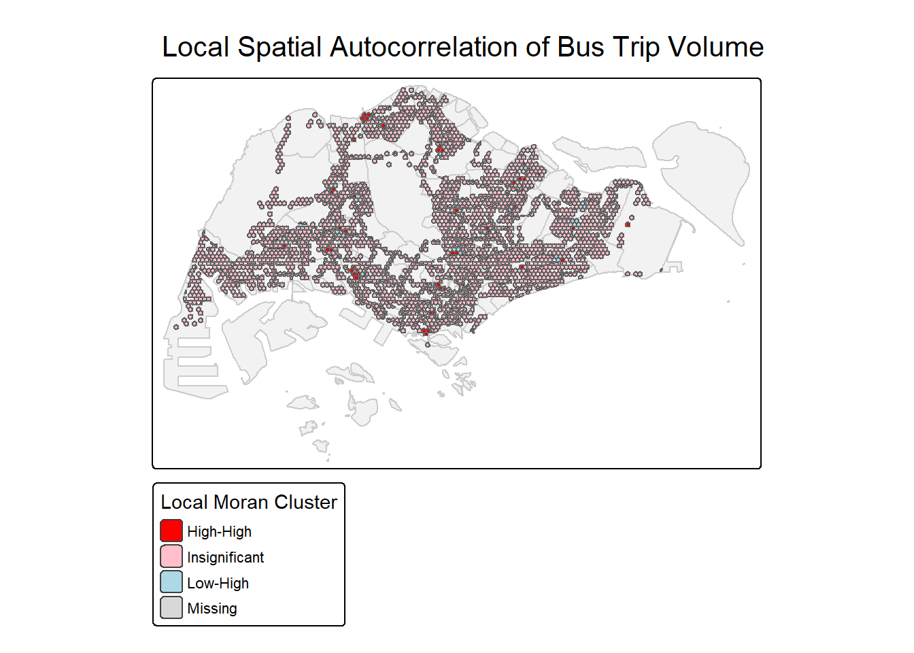
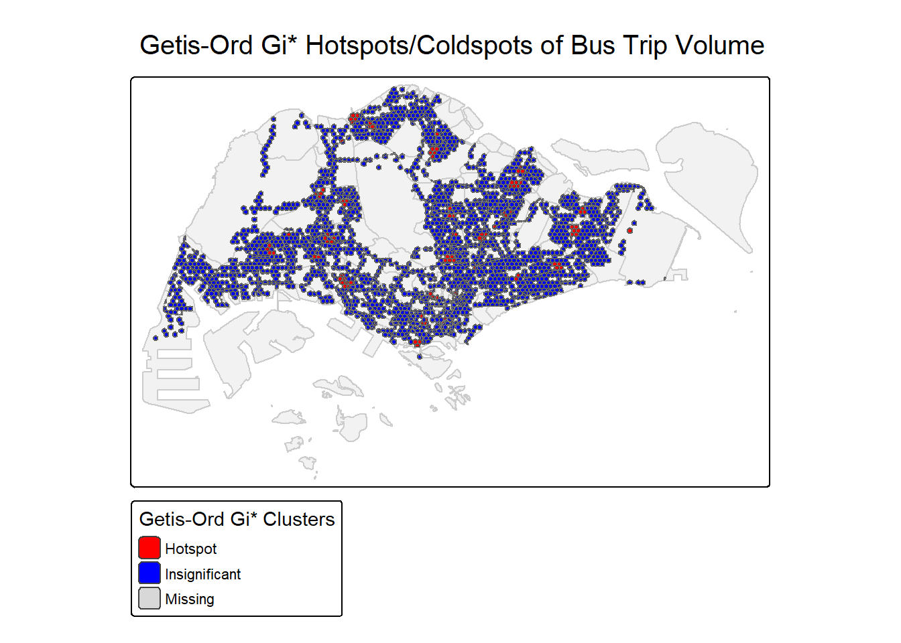
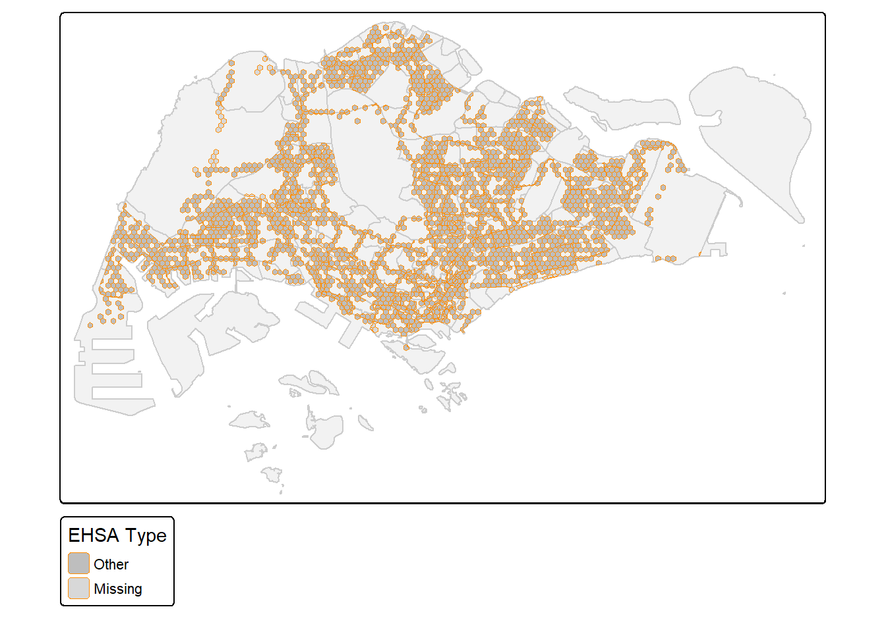

pacman::p_load(sf, tidyverse, tmap, sfdep, knitr,lubridate, units, spdep, tmaptools, spacetime)Take-home Exercise 2
1. Overview
1.1 Background
Singapore’s dense urban environment and heavy reliance on public transport make efficient bus systems critical. While smart card and GPS data from LTA provide detailed trip records, traditional analysis often overlooks hidden spatial-temporal patterns. Advanced geostatistical methods like Local Spatial Autocorrelation (LMSA) and Emerging Hot Spot Analysis (EHSA) can uncover these patterns, helping optimize routes and resource allocation.
This study uses August 2025 bus trip data to analyze passenger volumes across a 375m hexagonal grid, identifying:
Spatial clusters (hotspots/coldspots) of demand
Temporal trends (e.g., peak-hour intensification)
Anomalies for targeted improvements
1.2 Objectives
Detect spatial patterns in bus trip generation using:
Local Moran’s I, Geary’s C, and Getis-Ord Gi*
Hexagon-level (375m) hotspots/coldspots
Analyze temporal trends via EHSA:
Classify demand changes (Intensifying, Sporadic, Diminishing)
Focus on peak hours (weekday 6–9am, 5–8pm; weekend 11am–8pm)
Provide actionable insights for:
Bus lane prioritization
Resource allocation to underserved areas
2. Data Wrangling
2.1 Loading Packages
| Packages | Function |
|---|---|
| sf | Core package for reading, processing, manipulating, and analyzing vector spatial data in R. |
| tidyvers | A collection of data science tools for cleaning, visualizing, and importing data following the “tidy data” principle. |
| tmap | Facilitates static and interactive spatial data visualization with a concise, customizable syntax. |
| sfdep | Spatial dependence analysis tool built on sf, offering local spatial autocorrelation tests and spatial weight matrix construction. |
| knitr | Enables dynamic document generation by integrating R code, text, and plots into PDF, HTML, and Word formats. |
| lubridate | Simplifies date/time data handling, including parsing, conversion, arithmetic operations, and time zone adjustments. |
| units | Adds physical units to numerical data and supports unit-aware arithmetic operations and conversions. |
| spdep | Classic spatial dependence analysis package for constructing spatial weight matrices and conducting global/local spatial autocorrelation tests (compatible with traditional spatial data formats). |
| tmaptools | Auxiliary toolset for tmap, providing spatial data preprocessing, base map loading, and legend optimization. |
| spcetime | Supports storage, processing, and analysis of spatiotemporal data, enabling creation and querying of spatiotemporal objects. |
2.2 The Data
The data comes from DataMall | Land Transport Authority (LTA) . Before importing, the data has been processed.
2.2.1 Importing geospatial data
mpsz = st_read(dsn = "data/geospatial",
layer = "MP14_SUBZONE_WEB_PL")Reading layer `MP14_SUBZONE_WEB_PL' from data source
`D:\XieHaoyang3537\ISSS626-GAA-XieHaoyang\Take-home_Ex\Take-home_ex2\data\geospatial'
using driver `ESRI Shapefile'
Simple feature collection with 323 features and 15 fields
Geometry type: MULTIPOLYGON
Dimension: XY
Bounding box: xmin: 2667.538 ymin: 15748.72 xmax: 56396.44 ymax: 50256.33
Projected CRS: SVY21mpsz <- st_transform(mpsz, 3414)2.2.2 Importing Bus Stop data
BusStop = st_read(dsn = "D:/XieHaoyang3537/ISSS626-GAA-XieHaoyang/In-class_Ex/In-class_ex5/data/LTADataMall/",
layer = "BusStop")Reading layer `BusStop' from data source
`D:\XieHaoyang3537\ISSS626-GAA-XieHaoyang\In-class_Ex\In-class_ex5\data\LTAdataMall'
using driver `ESRI Shapefile'
Simple feature collection with 5172 features and 2 fields
Geometry type: POINT
Dimension: XY
Bounding box: xmin: 3970.122 ymin: 26482.1 xmax: 48285.52 ymax: 52983.82
Projected CRS: SVY21BusStop <- st_transform(BusStop, 3414)odbus <- read_csv("D:/XieHaoyang3537/ISSS626-GAA-XieHaoyang/In-class_Ex/In-class_ex5/data/LTADataMall/origin_destination_bus_202508.csv")2.3 Extractting Bus Stops within Singapore
BusStop_in_SG <- st_join(
BusStop, mpsz,
join = st_within,
left = FALSE)tm_shape(mpsz) +
tm_polygons() +
tm_shape(BusStop_in_SG) +
tm_dots()
3 Deriving Analytical Hexagon
3.1 Generate a 375m hexagonal grid
hexagon <- st_make_grid(
mpsz,
cellsize = 375,
what = "polygons",
square = FALSE
) %>%
st_sf() %>%
st_intersection(mpsz)3.2 Filtering hexagons with bus stops
hexagon$n_collisions =
lengths(st_intersects(
hexagon, BusStop_in_SG))
hexagon <- filter(hexagon, n_collisions > 0)3.3 Assigning ids to each hexagon
hexagon <- hexagon %>%
select(, - n_collisions)
hexagon$HEX_ID <- sprintf(
"H%04d", seq_len(nrow(hexagon))) %>%
as.factor()
kable(head(hexagon))| OBJECTID | SUBZONE_NO | SUBZONE_N | SUBZONE_C | CA_IND | PLN_AREA_N | PLN_AREA_C | REGION_N | REGION_C | INC_CRC | FMEL_UPD_D | X_ADDR | Y_ADDR | SHAPE_Leng | SHAPE_Area | geometry | HEX_ID |
|---|---|---|---|---|---|---|---|---|---|---|---|---|---|---|---|---|
| 1 | 1 | MARINA SOUTH | MSSZ01 | Y | MARINA SOUTH | MS | CENTRAL REGION | CR | 5ED7EB253F99252E | 2014-12-05 | 31595.84 | 29220.19 | 5267.381 | 1630379.3 | POLYGON ((30980.04 28847.36… | H0001 |
| 1 | 1 | MARINA SOUTH | MSSZ01 | Y | MARINA SOUTH | MS | CENTRAL REGION | CR | 5ED7EB253F99252E | 2014-12-05 | 31595.84 | 29220.19 | 5267.381 | 1630379.3 | POLYGON ((31355.04 28630.85… | H0002 |
| 1 | 1 | MARINA SOUTH | MSSZ01 | Y | MARINA SOUTH | MS | CENTRAL REGION | CR | 5ED7EB253F99252E | 2014-12-05 | 31595.84 | 29220.19 | 5267.381 | 1630379.3 | POLYGON ((31542.54 28955.61… | H0003 |
| 1 | 1 | MARINA SOUTH | MSSZ01 | Y | MARINA SOUTH | MS | CENTRAL REGION | CR | 5ED7EB253F99252E | 2014-12-05 | 31595.84 | 29220.19 | 5267.381 | 1630379.3 | POLYGON ((31917.54 28955.61… | H0004 |
| 2 | 1 | PEARL’S HILL | OTSZ01 | Y | OUTRAM | OT | CENTRAL REGION | CR | 8C7149B9EB32EEFC | 2014-12-05 | 28679.06 | 29782.05 | 3506.107 | 559816.2 | MULTIPOLYGON (((28161 29825… | H0005 |
| 2 | 1 | PEARL’S HILL | OTSZ01 | Y | OUTRAM | OT | CENTRAL REGION | CR | 8C7149B9EB32EEFC | 2014-12-05 | 28679.06 | 29782.05 | 3506.107 | 559816.2 | POLYGON ((28283.74 29538.04… | H0006 |
3.4 View hexagon and BusStop distribution
# View hexagon and BusStop distribution
tmap_mode("plot")
tm_shape(mpsz) +
tm_polygons(col = "gray95", border.col = "gray80") +
tm_shape(hexagon) +
tm_borders(col = "darkorange", lwd = 0.6) +
tm_shape(BusStop) +
tm_dots(col = "blue", size = 0.05)
This map shows the final analytical hexagon grid (black dots) derived from the initial hexagonal framework (orange lines). The dense distribution of points across Singapore’s outline confirms successful spatial indexing, where each dot represents a hexagon cell containing at least one bus stop (as filtered in Step 3.2). The clustering of dots in central areas (e.g., CBD) reflects higher bus stop density, while sparser dots in peripheral regions (e.g., Lim Chu Kang) indicate lower coverage. The hexagon grid now serves as the spatial unit for subsequent trip volume aggregation and analysis.
4.Calculate the number of trips at the hexagon
4.1 Calculate the total number of passengers for each ORIGIN_PT_CODE (departure station)
origin_trips <- odbus %>%
group_by(ORIGIN_PT_CODE) %>%
summarise(total_trips = sum(TOTAL_TRIPS, na.rm = TRUE))4.2 Merge total passengers into busstop.sf
busstop_trips.sf <- BusStop %>%
left_join(origin_trips, by = c("BUS_STOP_N" = "ORIGIN_PT_CODE"))
summary(busstop_trips.sf$total_trips) Min. 1st Qu. Median Mean 3rd Qu. Max. NA's
4 3566 11059 24000 26069 1932052 154 4.3 Spatial aggregation
hex_trips.sf <- st_join(hexagon, busstop_trips.sf) %>%
group_by(hex_id = row_number()) %>%
summarise(total_trips = sum(total_trips, na.rm = TRUE))4.4 Visualize the distribution
tmap_mode("plot")
tm_shape(mpsz) +
tm_polygons(alpha = 0.1, border.col = "grey") +
tm_shape(hex_trips.sf) +
tm_polygons("total_trips",
style = "quantile",
palette = "YlOrRd",
border.alpha = 0.3,
title = "Total Passenger Trips by Origin (Hexagon 375m)") +
tm_layout(legend.outside = TRUE)
This choropleth map reveals strong spatial concentration of bus trip origins. Dark red hexagons (30,703–1.9M trips) form clear hotspots in central Singapore (CBD, Orchard) and regional hubs (Tampines, Jurong East), indicating high demand zones. Yellow areas (0–2,065 trips) in peripheral regions (e.g., Western Catchment, Lim Chu Kang) reflect low demand. The extreme value range (max ≈1.9M vs min ≈0) highlights significant inequality in trip generation, emphasizing the need for demand-based resource allocation.
5.Exploratory Spatial Data Analysis (ESDA)
5.1 Calculate global Moran’s I
hex_nb <- poly2nb(hex_trips.sf, queen = TRUE)
hex_listw <- nb2listw(hex_nb, style = "W", zero.policy = TRUE)
global_moran <- moran.test(hex_trips.sf$total_trips, listw = hex_listw, zero.policy = TRUE)
global_moran
Moran I test under randomisation
data: hex_trips.sf$total_trips
weights: hex_listw
n reduced by no-neighbour observations
Moran I statistic standard deviate = 13.855, p-value < 2.2e-16
alternative hypothesis: greater
sample estimates:
Moran I statistic Expectation Variance
9.882886e-02 -1.942502e-04 5.108348e-05 5.2 Calculate local Moran’s I
local_moran <- localmoran(hex_trips.sf$total_trips, listw = hex_listw, zero.policy = TRUE)
hex_trips.sf <- hex_trips.sf %>%
mutate(
local_I = local_moran[, 1],
z_value = local_moran[, 4],
p_value = local_moran[, 5]
)5.3 Calculate Local Geary’s C
local_geary <- localC(hex_trips.sf$total_trips,
listw = hex_listw,
zero.policy = TRUE)
hex_trips.sf <- hex_trips.sf %>%
mutate(
local_geary = local_geary,
geary_pvalue = pnorm(-abs(local_geary))
)5.4 Calculate Getis-Ord Gi*
local_g <- localG(hex_trips.sf$total_trips,
listw = hex_listw,
zero.policy = TRUE)
hex_trips.sf <- hex_trips.sf %>%
mutate(
gi_star = local_g,
gi_pvalue = 2 * pnorm(-abs(local_g))
)5.5 Plotting
hex_trips.sf <- hex_trips.sf %>%
mutate(
cluster = case_when(
local_I > 0 & p_value < 0.05 & total_trips > mean(total_trips) ~ "High-High",
local_I > 0 & p_value < 0.05 & total_trips <= mean(total_trips) ~ "Low-Low",
local_I < 0 & p_value < 0.05 & total_trips > mean(total_trips) ~ "High-Low",
local_I < 0 & p_value < 0.05 & total_trips <= mean(total_trips) ~ "Low-High",
TRUE ~ "Insignificant"
)
)
tmap_mode("plot")
tm_shape(mpsz) +
tm_polygons(col = "gray95", border.col = "gray80") +
tm_shape(hex_trips.sf) +
tm_fill(
col = "cluster",
palette = c("red", "pink", "lightblue", "blue", "white"),
title = "Local Moran Cluster"
) +
tm_borders(col = "gray50", lwd = 0.3) +
tm_layout(
main.title = "Local Spatial Autocorrelation of Bus Trip Volume",
legend.outside = TRUE
)
This Local Moran’s I map identifies four types of spatial clusters. Red “High-High” clusters dominate central Singapore (CBD, Orchard) and regional centers, showing areas with high trip volumes surrounded by similarly high volumes. Blue “Low-High” outliers (high value surrounded by low values) appear sporadically, possibly indicating isolated high-demand stops in generally low-demand areas. The overwhelming gray “Insignificant” areas confirm that spatial autocorrelation is concentrated in specific hubs rather than widespread.
hex_trips.sf %>%
mutate(
gi_cluster = case_when(
gi_star > 0 & gi_pvalue < 0.05 ~ "Hotspot",
gi_star < 0 & gi_pvalue < 0.05 ~ "Coldspot",
TRUE ~ "Insignificant"
)
) %>%
{
tm_shape(mpsz) +
tm_polygons(col = "gray95", border.col = "gray80") +
tm_shape(.) +
tm_polygons(
"gi_cluster",
palette = c("red", "blue", "gray90"),
title = "Getis-Ord Gi* Clusters"
) +
tm_borders(col = "gray50", lwd = 0.3) +
tm_layout(
main.title = "Getis-Ord Gi* Hotspots/Coldspots of Bus Trip Volume",
legend.outside = TRUE
)
}
The Getis-Ord Gi* analysis reveals more focused red hotspots in central and western Singapore, specifically identifying statistically significant clusters of high values. Unlike Moran’s I, Gi* specializes in detecting “hot” and “cold” spots without distinguishing spatial outliers. The near-absence of coldspots (green) suggests few areas have consistently low trip volumes surrounded by similarly low volumes. The concentrated hotspots align with known commercial and transport hubs.
5.4 Count the number of various types of gathering areas
cluster_summary <- hex_trips.sf %>%
st_drop_geometry() %>%
group_by(cluster) %>%
summarise(
count = n(),
total_trips_sum = sum(total_trips, na.rm = TRUE)
) %>%
arrange(desc(count))
cluster_summary# A tibble: 3 × 3
cluster count total_trips_sum
<chr> <int> <dbl>
1 Insignificant 4886 104105574
2 Low-High 150 1441008
3 High-High 131 143139146.Emerging Hot Spot Analysis (EHSA)
6.1 Preparing Trip Generation Data
trips <- odbus %>%
select(c(ORIGIN_PT_CODE, DAY_TYPE, TIME_PER_HOUR, TOTAL_TRIPS))%>%
rename(BUS_STOP_N = ORIGIN_PT_CODE)%>%
rename(HOUR_OF_DAY = TIME_PER_HOUR)%>%
rename(TRIPS = TOTAL_TRIPS)
trips$BUS_STOP_N <- as.factor(trips$BUS_STOP_N)
kable(head(trips))| BUS_STOP_N | DAY_TYPE | HOUR_OF_DAY | TRIPS |
|---|---|---|---|
| 84671 | WEEKENDS/HOLIDAY | 9 | 3 |
| 10099 | WEEKENDS/HOLIDAY | 13 | 31 |
| 64601 | WEEKENDS/HOLIDAY | 21 | 3 |
| 53009 | WEEKENDS/HOLIDAY | 16 | 10 |
| 80051 | WEEKENDS/HOLIDAY | 18 | 4 |
| 70031 | WEEKDAY | 14 | 1 |
bs_hex <- st_intersection(
BusStop, hexagon) %>%
st_drop_geometry() %>%
select(c(BUS_STOP_N, HEX_ID))
kable(head(bs_hex))| BUS_STOP_N | HEX_ID | |
|---|---|---|
| 4655 | 03331 | H0001 |
| 1106 | 03341 | H0002 |
| 3530 | 03349 | H0002 |
| 3787 | 03371 | H0003 |
| 2288 | 03369 | H0004 |
| 2414 | 06069 | H0005 |
6.1.1 Adding HEX_ID into bus trips data
trips <- inner_join(trips, bs_hex)
kable(head(trips))| BUS_STOP_N | DAY_TYPE | HOUR_OF_DAY | TRIPS | HEX_ID |
|---|---|---|---|---|
| 84671 | WEEKENDS/HOLIDAY | 9 | 3 | H0667 |
| 10099 | WEEKENDS/HOLIDAY | 13 | 31 | H0024 |
| 64601 | WEEKENDS/HOLIDAY | 21 | 3 | H1934 |
| 53009 | WEEKENDS/HOLIDAY | 16 | 10 | H1474 |
| 80051 | WEEKENDS/HOLIDAY | 18 | 4 | H0893 |
| 70031 | WEEKDAY | 14 | 1 | H0751 |
6.2 Generate Hexagon × time period travel table
trips <- trips %>%
mutate(
time_period = case_when(
DAY_TYPE == "WEEKDAY" & HOUR_OF_DAY >= 6 & HOUR_OF_DAY < 9 ~ "Weekday_Morning",
DAY_TYPE == "WEEKDAY" & HOUR_OF_DAY >= 17 & HOUR_OF_DAY < 20 ~ "Weekday_Afternoon",
DAY_TYPE %in% c("SATURDAY", "SUNDAY", "PUBLIC_HOLIDAY") & HOUR_OF_DAY >= 11 & HOUR_OF_DAY < 20 ~ "Weekend_Holiday",
TRUE ~ NA_character_
)
) %>%
filter(!is.na(time_period))
hex_time_trips <- trips %>%
group_by(HEX_ID, time_period) %>%
summarise(trips_sum = sum(TRIPS, na.rm = TRUE), .groups = "drop")
hex_time_trips <- hex_time_trips %>%
mutate(time_index = as.numeric(factor(time_period, levels = c("Weekday_Morning", "Weekday_Afternoon", "Weekend_Holiday"))))
head(hex_time_trips)# A tibble: 6 × 4
HEX_ID time_period trips_sum time_index
<fct> <chr> <dbl> <dbl>
1 H0001 Weekday_Afternoon 27 2
2 H0002 Weekday_Afternoon 97 2
3 H0002 Weekday_Morning 5 1
4 H0003 Weekday_Afternoon 23 2
5 H0003 Weekday_Morning 1 1
6 H0004 Weekday_Afternoon 39 26.3 Generate Space-Time Cube
library(Kendall)
hex_trend <- hex_time_trips %>%
group_by(HEX_ID) %>%
summarise(
mk_tau = tryCatch({
if(n() >= 3) Kendall(trips_sum)$tau else NA_real_
}, error = function(e) NA_real_),
mk_p = tryCatch({
if(n() >= 3) Kendall(trips_sum)$sl else NA_real_
}, error = function(e) NA_real_),
.groups = "drop"
)6.4 Classify EHSA Type
hex_trend <- hex_trend %>%
mutate(
EHSA_type = case_when(
mk_tau > 0 & mk_p < 0.05 ~ "Intensifying_Hotspot",
mk_tau < 0 & mk_p < 0.05 ~ "Intensifying_Coldspot",
mk_p >= 0.05 ~ "Sporadic",
TRUE ~ "Other"
)
)
head(hex_trend)# A tibble: 6 × 4
HEX_ID mk_tau mk_p EHSA_type
<fct> <dbl> <dbl> <chr>
1 H0001 NA NA Other
2 H0002 NA NA Other
3 H0003 NA NA Other
4 H0004 NA NA Other
5 H0005 NA NA Other
6 H0006 NA NA Other 6.5 Join EHSA Type back to Hexagon sf for mapping
hex_EHSA_sf <- hexagon %>%
left_join(hex_trend, by = c("HEX_ID"))6.6 Visualize EHSA map
tmap_mode("plot")
tm_shape(mpsz) +
tm_polygons(col = "gray95", border.col = "gray80") +
tm_shape(hex_EHSA_sf) +
tm_polygons(col = "EHSA_type",
palette = c("Intensifying_Hotspot" = "red",
"Intensifying_Coldspot" = "blue",
"Sporadic" = "yellow",
"Other" = "gray"),
border.col = "darkorange",
lwd = 0.6,
title = "EHSA Type") +
tm_layout(legend.outside = TRUE)
The EHSA results indicate limited significant spatio-temporal trends. The overwhelming “Other” category (orange) suggests most hexagons show no statistically meaningful hot/cold spot patterns over time. The minimal “Missing” data (light orange) implies near-complete spatial coverage but confirms the absence of intensifying, diminishing, or sporadic hotspots. This likely reflects stable travel patterns during the observed periods, with insufficient volatility to generate significant EHSA classifications.
7.Conclusion
Spatial Clustering: Bus trip origins show significant spatial autocorrelation. Distinct hotspots are concentrated in central Singapore (e.g., CBD, Orchard) and major regional hubs (e.g., Tampines, Jurong East), while cold spots are found in peripheral areas.
Method Consistency: Both Local Moran’s I and Getis-Ord Gi* statistics yielded consistent results, confirming the robustness of the identified spatial patterns.
Temporal Stability: Emerging Hot Spot Analysis (EHSA) classified most areas as “No Pattern” or “Sporadic”, indicating minimal significant change in spatial demand patterns across the three time periods analyzed.
Planning Implication: The results reveal a stable, mature public transport demand structure. This supports maintaining and optimizing services in existing high-demand corridors rather than large-scale rerouting.